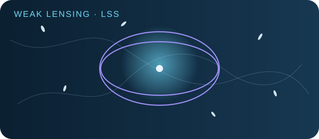
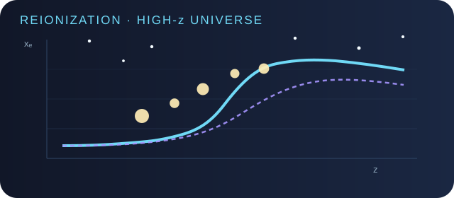
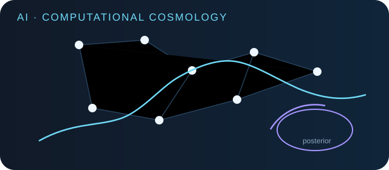
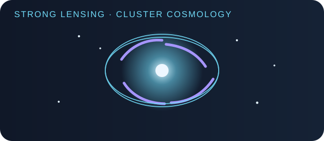

01Weak Gravitational Lensing & Large-scale Structure
Precision weak-lensing cosmology, intrinsic alignment, galaxy–galaxy lensing, field-level inference, void lensing, and tests of gravity.
COSMOLOGY · LENSING · COSMIC DAWN · AI FOR SCIENCE
We combine precision observations, physical simulations, survey science, and scientific AI to study gravitational lensing, cosmic reionization, dark matter, and large-scale structure.
RESEARCH
Our research is organized by the scientific questions we ask. Methods, data systems, and observing programs are presented separately as enabling capabilities.

01Precision weak-lensing cosmology, intrinsic alignment, galaxy–galaxy lensing, field-level inference, void lensing, and tests of gravity.

02Reconstructing reionization, identifying early ionizing sources, interpreting JWST high-redshift galaxies, and using the early Universe to constrain cosmology and dark matter.

03Scientific agents, deep learning, simulation-based inference, field-level inference, and executable verification for astronomical research.

04Pixelized cluster-lens modeling, strong-lensing systematics, precision H₀ inference, and dark-matter substructure in galaxy clusters.
MAJOR PROGRAMS
Weak-lensing cosmology preparation, pipeline development, and survey science.
Ministry of Science and Technology project on early-Universe and related cosmology.
Weak-lensing, CMB-lensing cross-correlation, and intrinsic-alignment science.
High-redshift galaxies, lensing analysis, PSF reconstruction, and NIRCam data reduction.
PEOPLE
Our group spans precision cosmology, survey pipelines, JWST analysis, physical simulations, and scientific agents.
Weak gravitational lensing and large-scale structure
Leads CSST weak-lensing cosmologyWeak gravitational lensing
Leads the CSST weak-lensing pipelineWeak gravitational lensing · JWST data analysis
Field-level inference for weak-lensing cosmology
Weak-lensing flexion measurements
Weak gravitational lensing
Agents for astronomy · baryonic feedback
Strong gravitational lensing in galaxy clusters
CSST MCI science data system
JWST high-redshift galaxies
Weak-lensing cosmology
Cosmic reionization · dark matter
Cosmic reionization · galaxy clusters
Dark matter · high-redshift galaxies
Large-scale structure · former joint PhD student
Strong gravitational lensing in galaxy clusters
Weak gravitational lensing · large-scale structure
Weak gravitational lensing
SELECTED PUBLICATIONS
The selection below emphasizes recent work and papers led by the group.
Weak-lensing cosmology, intrinsic alignment, galaxy–galaxy lensing, cluster environments, and gravity tests.
Reionization, JWST galaxies, and dark-matter constraints from the early Universe.
Scientific agents, deep learning, field-level inference, and simulation-based inference.
Cluster-lens modeling, strong-lensing systematics, and precision H₀ inference.
METHODS & INFRASTRUCTURE
These are not separate science themes, but reusable methods, pipelines, data systems, and computational frameworks that enable multiple research directions.
Hybrid PSF reconstruction for precision JWST NIRCam analysis.
Image coaddition and data products for JWST NIRCam.
End-to-end calibration and analysis infrastructure for CSST weak-lensing cosmology.
Science-data-system development for the CSST Multi-Channel Imager.
Agentic workflows for astronomical discovery, verification, and simulation.
Reusable field-level and simulation-based inference tools for cosmology.
GROUP LEADER
My research uses gravitational lensing and the early Universe to study cosmology and fundamental physics. I develop observational and computational methods connecting galaxy surveys, CMB measurements, 21-cm experiments, and high-redshift galaxies.
I also lead national and international survey, data-system, and observing efforts, and am developing scientific agents for astronomical discovery and simulation.
CONTACT
We welcome conversations about collaborations, students, surveys, and scientific AI.